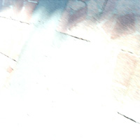
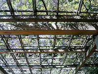
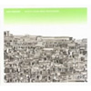
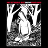
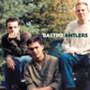
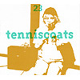

strange music page
* * * 2005.2
|

|
#元住吉ブレーメン通り (2/2)
最近あなぽこがいっぱい。
|
|
2005.1 / 2005.3
|
-2005.11.12
#はてなとmixiばっかで書いててこっちをサッパリ更新できないので、とりあえず左側のエントリだけこっそり上げておきます。いつか統合する日のために。
♪Hardscore/Methane
-2005.4.29 過去最大の更新サボり

#こっち更新しなくなって、２ヶ月。はてなも更新しなくなって１ヶ月。mixiではちょくちょく書いてるけど！
そんな訳で徐々に復帰しようと思います。今更昔の分の日記は書けないけど、とりあえず前見たライヴレポを少しずつ（はてなとかmixi日記をコピペしながら）書いていきます。
ところではてなにも書いたんですけど、小間慶大/青空にハマってます。何か日本ネイティブのMike Oldfieldみたいな感じで、凄い好きかもしれない。
♪小間慶大/マーチ
-2005.3.19 ごめん、ちょっと告知
「日本語のふぉーくとろっく」
日時: 05/03/20(sun) 20:00open/20:30start
場所:
下北沢mona records
値段: \3000 (DJタイムのみの方は\1000+drink)
LIVE: まちかどゆうえん / Early Times Strings Band / Freebo
DJ:
風街まろん /
山下スキル / あべマン / 川村恭子 /
立石郁 /
宗像明将 / 菅原圭
もう明日ですけど、このイベントでDJやらせて頂くことになりました。出番はたぶん2時か3時くらいかな？
翌日は祝日なので、お暇でしたら来て頂けると嬉しいなと。
♪二階堂和美/世界でいちばん熱い夏
-2005.2.19 KILLNIG TIME @ 渋谷ツインズよしはし
#この日は友達の結婚式だったのです。新郎新婦とも知り合いだったので、スピーチなどをやりつつ（緊張した）。でもホントにおめでとう。
で、プライベートな事は置いといて二次会はけた後に渋谷のツインズよしはしに行ってKILLING TIMEを見てきました（2nd setのみ）
今回はWhachoさん抜きで、その分Ma*Toさんがシンセでパーカッションの音をドドツパと出しておりました。
最初の曲は新曲みたい、何かミニマルなピアノフレーズに不思議な上モノの音。メロディアスなんだけどミニマル。少しECMみたいな雰囲気。
あー、あと何かここのハコの音の聞こえ方が好きかも。JIROKICHIなんかよりもイイんじゃないかなとか思います。板倉さんのギターの音も清水さんのピアノの音も凄く素直に聞こえます。
毎回（ってほど頻繁にライヴしてる訳じゃないけど）思うんですけど、やっぱりこのバンドだけは特別。曲がイイってのは勿論有るんですけど、何度見てもメンバーのキャラクターが伝わってくるような演奏で。こんだけキャラ立ってて全体としても面白いなんてねぇ、稀有のバランスの音楽って言ってもいいんじゃないかなぁ。
ほんとに、愉しい、音楽だなと、思うわけです。次はムーンライダーズ・カーネーションとの対バン4/22。クロスオーバージャパン6/4。だとか。
あ、来月アルバム再発が有りますので、もし聴いたことない方居たら買うように。ってか買え。
♪KILLNIG TIME/SEBO MURCHOSE
-2005.2.12 プログレ鍋 mixi編
#えーとまたやってしまいました、このヒドイ企画。今回もいつにも増して酷かったように思います。
参加者一覧・・・
風街まろんさん / ももんがさん / 宗像明将さん / xxxxxx xxxxさん / いくさん / クドウハルヲさん | ウツボカズラさん / 山下スキルさん / 北澤純さん / ゆきちさん / かたるさん / maschineさん / ドミンゴさん / halfway go!nr!nr!さん / ゆうさん / みやぐちさん / ミルカさん / 松前公高さん
・・・何か忘れていそうな気もするけど、たぶんこんな感じ。
6時からユルユルと初めて、前半はハルヲさんのBUBBLE-BのDVDとか小野真弓のDVDとかかけつつmachine and the synergetic nutsとかnatsumenとか、あと誰が持ってきたんだか元camelの人のテクノっぽいヤツとか色々と、その内人数増えてきて二部屋に（完全に）分かれて殺伐とプログレ。
特に鍋番長まろんさんが酔っ払っておかしく（比喩でなく）なってからは、鍋の中身はかなりの惨状に、特に奥の部屋チーム。火をつけてない鍋に卵とうどんを投入するから、白濁した物凄いモノになってました。
もーこの辺から何がなんだかわからんようになってきて、11時過ぎにみやぐちさんミルカさん松前さんがきた頃には鍋はもう無くなってて。その後はOzric TentaclesのDVD見たり、FinchとかIsildurs BaneとかラスカルリポーターズとかPeter Gabriel後のジェネシスとかMoerlan's Gongとか・・・覚えてるのはこの辺まで・・・起きたらまろんさんとスキルさんしか居なくて。「お疲れ様でした～」とか言ったのか言わなかったのだか、もう一度寝て起きたら誰も居ませんでした。
皆様すんません＆ありがとうございました。あんなんでイイのでしょうか？ダメかやっぱり。
♪Jonas Hellborg/Look
-2005.2.7 風邪気味
#新しく出来たラーメン屋に行きました。新装開店で半額なので調子乗って食べたら気持ち悪い。今年入ってからライヴにはあまり行ってないでCDばっかし買ってる様子。
いやだが、今週は行くぞ。
てなわけで、最近買ったCD。アレだ↓こんな並びだと、ポストロック好きな人みたいだな。
 |
Sea and CakeのSam Prekopの2ndソロ。1stが妙に気に入ってたので買ってみました。
メンバーは殆ど前回と一緒ですけど、今回はプロデュースがJim O'RourkeからJohn McEntireに変わってます。ボサノバっぽい感じは無くなっちゃいましたけど、前回よりもカッチリまとまったような感じです。地味ーに長く聴けそうです。
|

 |
#Gastr Del Solの前身バンドの2nd+3rdの再発を買ってきました～グシャグシャしたギターに、ガリガリしたベースに、切迫したドラム。
言われないとコレのギターがDavid Grubbsだなんて事わからないかも。
とにかく何かもー炸裂してます。特に3rdの方がヤバイかも。
んで、こっちは間違えて買った。後期Bastroのライヴ盤。
|
 |
#えーと買ってから気付いたのですけど、1999年に出ていた1st epの新装盤みたい。
最近マヘル（=工藤冬里）と一緒にやってるさや(vo,etc)と植野隆司(g,etc)とのユニット。
なんだかジャケ見て気になって試聴したら、すんげー良くって。
何て言えばいいのかな？脱力フォークとかサイケデリアとか、どーゆー呼び方しても何かちょっと違う感じで。マヘル聴いてて、一瞬フワっと気持ちよくなる瞬間をまとめたような・・・（ってもマヘル知らない人には分からないよね、この説明じゃ）懐かしい感じとか新しい感じが入り混じってフワフワしてるような感じ。
パステルズとかあの辺好きならハマルんじゃないかなー、さやさんのビミョーな歌声もイイです。
|
あと、地道に自宅鯖への引越しをしてます。最近まったくちっとやる気が出てこないので難航してます。
♪Sam Prekop/Density
-2005.1.31 bbsやめた。
#いやまーその、もーあんまり付けてる意味無いかなぁとか。
♪ヤン富田/Music for Living Sound
-2005.1.30 Quarterstick Recordsにハマってみる。
#最初はRachel'sだったんすよ。そしたらSonora PineやらShipping Newsやらと・・・んで結局Rodanのアルバムを買ってきちゃいました。
 |
一曲目だけその後のRachel's/Sonora Pineみたいなチェンバーな感じですが、他の曲はジャンクと言うかグランジと言うか。ってかコレ94年かぁ・・・凄いんだけど、当時には話題になったんでしょうかね？メンバーその後の足跡としては
Tara Jane O'Neil→Sonora Pine/Retsin/ソロ
Kevin Coultas→Sonora Pine
Jeff Mueller→June of 44/Shipping News
Jason Noble→Rachel's/Shipping News
ちなみにJune of 44にはHIMのDoug Scharinも在籍してます。
|
 |
で、コレがRODANのメンバー2人のバンド。ちょっと暗めのポストロック。
このCDは過去のep3枚と新曲3曲。オルタナ(死語かな？)からちょっとずつ変化してくよーな感じが面白い。というかー何曲か70年代Pink Floydみたいな曲が有って可笑しいかも。
|
♪Rodan/Rusty
-2005.1.15 さむ。
#ハードオフにでも行こうかと思ったけど、寒かったのでやめちゃいました。ディレイが欲しいんだけど。
 |
#whatwedidonourholidays*でこんな風に紹介されてたので早速amazonで買ってみました。
KILLING TIMEとは思わないものの、物凄く雰囲気の有るチェンバージャズ。Die Knodelとかにも近いのかな？ココに載ってるビデオクリップ(?)とかも凄くイイ感じで。気持ちのイイ映画見終わった感じの音楽かなと思います。
あ、何曲目だか忘れたけど、ミートピアみたいな飄々とコミカルな曲も有ったり。あ、Zeena Parkinsも参加してます。
Rachel'sとかThrenody Ensembleみたいに、チェンバーロックの現代系って感じでかなり気に入りました。このCDが4枚目との事で、他のアルバムも探してみようかな？
|
 |
#で、ついでに元Rodan,Retsin,Sonora PineのTara Jane O'Neilの去年のアルバムを買ってきました。
ソロとしては4枚目みたいです。もーちょいエレクトロ風味かなと思ったけど、かなりフォーキーな味わい。基本的には暗いんだけど、芯の強そうな感じです。かなり好きなタイプの歌モノ。
Slint/Bastro/Rodan/Rachel's/Sonora Pine/June of 44辺りの流れをまとめたサイトとか無いのかなぁ？最近この辺の買ってハズレ無しっすよ。
|
♪Tin Hat Trio/Same Shirt, Different Day
-2005.1.13
 #雲が光ってて綺麗でした。
#雲が光ってて綺麗でした。
2004年のベストみたいなモノをfreak in freak outさんの所に投稿してみました。ってか年末のKILLING TIMEの事書き忘れたけど。あと、フロスティッドグラスの2004年ノンジャンルベスト5にも。ほかの人の2004年ベストとか見るの面白い。全然違う人とかちょっと似てる人とか。
2004年はCD買う枚数が減って、ライヴ行く回数が増えました。やっぱり生でライヴ見れるのが一番イイなぁと思います。特に佳村萠さんとKILLING TIMEとる*しろうと…って書き出すとキリないや。
あと世の中の流行ってる音楽とかが本気でわからなくなってきました。世の中でも音楽趣味の細分化が進んでるよーな気はするので、けっこうみんな（少なくとも首都圏在住な人たち）そんなモノかも知れないなとも思ってます。
ってのも世の中で「売れてる」って喧伝されてるモノをまわりの人が誰も知らなかったりとかするので。何かこう「世の中こーゆー事になってるらしい」って世界との乖離を物凄く感じます。まぁ「フツー」の人なんて居ないんだろうけど、それでもちょっと。何だか。
♪Cyann & Ben/Happy like an Autumn Tree
-2005.1.10 わー
#2003年12月、本体サイト更新たったの1回か。ひどいなぁ。
とりあえず最近買ったCDあたりから再開。そのうちblogみたいにするよ、きっと。
 |
#買ってきました。NATSUMENの初音源です。
1曲目の「Newsummerboy」のみスタジオ録音。「RORO」での偏執的な編集仕事の再来と言うか、ライヴではあれだけ迸ってるのに、何だこの緻密なミックスは。
「Sonata of the Summer」はちょっとDCPRGみたいなポリリズムなジャズロック。「Natsu no Mujina」は「Akiramujina」ですね、「RORO」とは楽器編成がかなり違ってるんですけど、やっぱりイイなぁ。
友達は「Hermeto PascoalがMike Oldfieldの曲やってるみたい」とか、成る程そんな聴き方もアリか。とにかく今年3月予定のアルバムが楽しみ。楽しみ。楽しみ。
|
 |
Joao Gilbertoの1973年のアルバム。恥ずかしい話、ちゃんと聞いたこと無かったんですよJoao Gilberto。
なんで聴こうと思ったかと言うとKILLING TIMEが最近のライヴの1曲目でこのアルバムの「Undiu」をよくやってるから。
まぁなんつーか、俺みたいな人がこのアルバムに対して付け加えて何か言うことなんて無くって。ただただ素晴らしいです。
|
 |
Egberto Gismontiの1980年のブラジルEMIからリリースされた作品。なんでコレ欲しかったかと言うと、前に円盤でやってた松前公高+山口優+Ma*ToさんのDJで誰かがかけてたよーな記憶が有ったので（松前さんだっけな？）
とりあえず一曲目の「Karate」って曲。「凄ぇ」としか言いようの無い超高速ジャズ、凄いのに何か笑えてくる。Arti+Mestieriがブルーグラスやってるような感じも。
すました感じのECMからのアルバムと較べて、アルバム全般に渡っておもちゃ箱を叩き壊したよーな世界が繰り広げられてます。
|
そうだ、左の最近買ったCDリストの中のCloudberry Jamからタンポポまでは、つぶれる直前の古本屋で一枚35円でゲットしてきたものです。タンポポの1stがい意外と良かった。
♪Joao Gilberto/Izaura